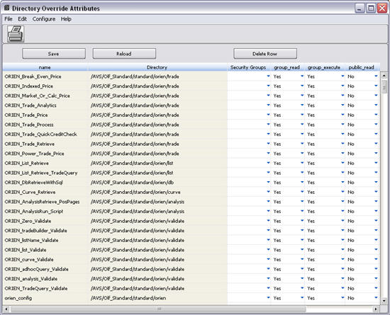

Directory Override Attributes
Overview
Note: This page is for v90r1 and later. For v82r1 and earlier, see Directory Override Attributes.
The Directory Override Attributes window enables users to override certain default access privileges with Standard and Customer-based scripts (which are collectively termed as “Restricted Scripts”).
- All Standard Scripts are loaded into /Script/Olf_Standard in the script directory system; subdirectories are created below this Path.
- Customer Scripts are placed in the Script Directory System in /Script/Olf_Customer/.
Note: Script in these directories CANNOT be modified.
The Directory Override Attributes window specifically enables users to:
- Change the Security Group that has permissions to a Script. It does not allow users to change the owner of the script or grant “write” privileges. However, the “owner” of the script (the user who created it or another user given ownership to the script by its original owner) may change those privileges if desired.
Note: If the user has privileges to view a restricted script, it is recommended that the user display it in the Script Editor and then save it under another name in another directory. This ensures that the original script will not be overwritten. Changes then can be made to the duplicate script.
- Modify the read/execute Group and Public permissions for the restricted script in this window.
Accessing This Window/Screen
This window can be accessed via the Script function in the Trading Manager or by following these steps:
- Start the Operations Manager.
- Select the Services tab.
- Click the Script icon.
- The Plugin window displays.
- Select a task and click an Edit button or select Script à Script Editor.
- The Script Editor window displays.
- Select File à Modify Restricted Script Properties.
The following window displays:

Menu Items
This window contains the following menu items:
Menu |
Menu Item |
Description |
|
File |
Save |
Saves any modifications to the database. |
|
|
Reload |
Reloads the displayed data from the database. |
|
|
Print Screen |
Prints this window. |
|
|
Exit |
Exits this window. |
|
Edit |
Add Row |
This function is not yet available. |
|
|
Delete Row |
Deletes the selected row from the table. |
|
|
Copy Row |
Copies the selected row into the paste buffer. |
|
|
Select All |
Selects all the rows in the table. |
|
Configure |
Current Table |
Opens the Configure View window. This provides a format in which to modify the details of the display. |
|
Help |
Help |
Displays information about this window. |
Buttons
This window contains the following buttons:
Button |
Description |
|
|
Performs the same function as File à Print Screen. |
|
|
Performs the same function as File à Save. |
|
|
Performs the same function as File à Reload. |
|
|
This performs the same function as Edit à Delete Row. |
Fields
This window contains the following fields:
Field |
Description |
||||||||||
Name |
This field cannot be modified. It represents the name of the script to which the privileges will be applied. |
||||||||||
|
Directory |
This field indicates the path and directory in which the script is located. All Standard Scripts are loaded into /Script/Olf_Standard. Customer Scripts are put in the Script Directory in /Script/Olf_Customer/. |
||||||||||
|
Groups |
This field displays a pick list of Security Groups (Security Groups are set up in the Admin Manager). Choose the group whose members have rights to the selected script and its associated permissions. Only someone with the security privilege of Directory System Script SuperUser or Directory Node System SuperUser can change the Group assigned to a script or the permissions associated with that script |
||||||||||
|
Group/Public Permissions (4 Fields) |
These are checkboxes that can be toggled on and off. They grant read and execute script privileges to the selected group and/or to all users (the Public). The following permissions are “Yes/No” pick lists. The available options are:
|
||||||||||
|
id |
This is a sequential number assigned to a script by the System when the original owner created and saved it. |
||||||||||
|
group_permiss |
Displays the group permission setting for the script. |
||||||||||
|
public_permiss |
Displays the public permission setting for the script. |
||||||||||
|
modified |
Indicates the number of times that the permissions of this script have been changed, with “0” indicating that the script is in its original form. |
Editing Permissions on Restricted Scripts
Only those with the security privilege of Script Directory System SuperUser or Directory Node System SuperUser can assign a script to a security group and modify who has read and execute permissions to it. They cannot change the write permissions. These scripts can be overwritten initiating another upgrade (using Upgrade_Load). You can also save a restricted script under another name by displaying the script in the Script Editor and selecting File àSave As.
Follow these steps to change the default permissions:
- Select the script for which access privileges should be modified.
- Left-click the Group field to select a Security Group. Those needing permissions to the script, but are not in the assigned group, can be added later through the Reference Explorer Desktop (V10.0r2 and later) or the Reference Manager (V10.2.1 and earlier) via the Security Group addition of Personnel Maintenance.
- Select the Group/Public permissions you are granting to the script's users by clicking on the checkbox fields. They can be toggled on and off.
- Press the Save button or select File à Save.
Note: Pressing the Reload button without saving first, cancels out the edit and returns the window to its previous condition.
Deleting Restricted Scripts
To delete a script along with its permissions:
- Select the row in the list box of the script to be deleted.
- Either press the <Delete> button or select Edit à Delete Row.
- Press the <Save> button or select File à Save.
Note: After scripts are deleted, they can only be recovered through a reload. To load a set of OLF Standard Scripts and OLF Customer Scripts, you must have Directory System Script SuperUser Permission or Directory Node System SuperUser Permission.